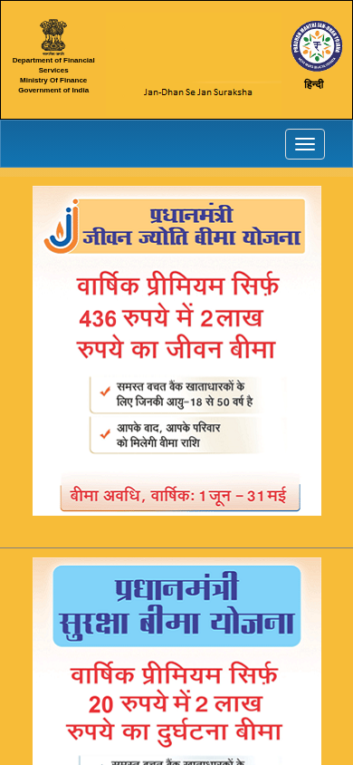

PMJJBY: life cover, annual premium and October enrolment limits
PMJJBY is bank-linked term life insurance. It offers ₹2 lakh death cover under the scheme rules, with a standard annual premium of ₹436. It is insurance, not a savings plan, and first-time enrolment has an important exclusion.
Who can join?
Pradhan Mantri Jeevan Jyoti Bima Yojana is available to eligible individual account holders aged 18 to 50 through participating banks and post offices. You may enrol through only one account, even if you have several accounts.
The FAQ describes annual cover from June 1 to May 31. Continued cover can extend to age 55 under its renewal conditions. Joining at 50 and continuing under the rules is different from a new applicant joining after the entry-age limit.
How much does it cost?
The standard full-year and renewal premium is ₹436. For new enrolment during September, October or November, the official FAQ lists a part-year premium of ₹342. December-February is ₹228, and March-May is ₹114. June-August uses the full ₹436.
These are scheme premium rules, not an instruction to transfer money to an agent. Ask your participating bank or post office which premium applies to your enrolment or rejoining date. The next renewal requires the full annual premium under the current rules.
The 30-day rule is not an accident waiting period
For first-time enrolment and rejoining, the FAQ says cover is not available for death other than due to an accident during the first 30 days from enrolment. Accidental death is treated differently under that exclusion. The original short post's broad waiting-period wording needed this distinction.
Risk starts from the date of premium auto-debit, subject to the scheme conditions. Filling a form without a successful debit does not prove active cover. Keep the acknowledgement and ask the bank to confirm the start date.
How to enrol: step by step
Checked against the official Jan Suraksha portal on 19 October 2026.
- PMJJBY is joined through your own bank or post office - there is no separate enrolment portal for the public. Start at your bank's official app, net banking or branch (most banks list PMJJBY under insurance or Jan Suraksha schemes).
- Check the rules on the official portal jansuraksha.gov.in: ages 18-50 with a savings bank account; the yearly premium is Rs 436 for Rs 2 lakh life cover; the cover year runs 1 June to 31 May.
- Check whether you already have PMJJBY through another account - one person can hold it through only one account.
- Fill the consent-cum-auto-debit form (your bank's version of the official form): give your nominee's details accurately, and consent to auto-debit of the premium.
- Submit and keep the acknowledgement. The premium is auto-debited every year before 31 May - keep enough balance in the account at the end of May.
- Your cover starts when the bank confirms enrolment; check status in your bank app or with the branch, and keep the nominee and account details updated.

Steps 1 and 3-6 happen with your own bank, so they are not shown as screenshots.
Video guides
We searched YouTube on 19 October 2026 for a step-by-step enrolment video for PMJJBY in English and in Malayalam that uses the current Rs 436 premium and the bank enrolment flow. We could not verify one that is current and accurate, so we are not linking any rather than risk outdated or unrelated instructions.
Cover, claims and safe use
The scheme is pure term insurance: it covers death and does not provide an investment component, maturity payment or surrender value. ₹2 lakh may be useful support, but it is not automatically enough cover for every family.
For a claim, contact the enrolling bank or post office and follow the insurer's current form and document requirements. Do not send death certificates or identity records to an unverified WhatsApp contact. Never share banking OTPs or PINs with an intermediary.
What changed since the original post?
This guide separates the ₹436 annual premium from the ₹342 part-year premium for new October enrolment, and narrows the first-30-days exclusion to non-accidental death. The official FAQ was rechecked; no policy was bought or personal eligibility assessed.
Frequently asked questions
Is ₹436 always charged when joining?
The current FAQ has part-year enrolment premiums. Full annual renewal is ₹436.
Can I join through two accounts for double cover?
No. The scheme permits one account per person.
Will I get my premiums back later?
It is term insurance, not a maturity-value savings product.
Sources: Official PMJJBY FAQ · Official Jan Suraksha portal. Checked 7 October 2026.